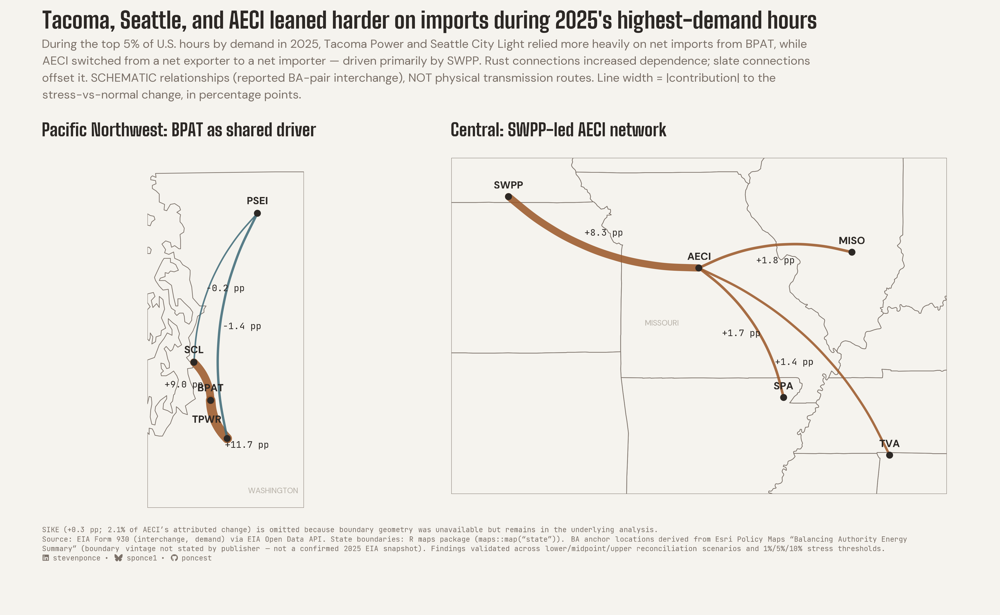

When U.S. Power Demand Peaks, Some Parts of the Grid Lean Harder on Their Neighbors
During the top 5% of demand hours in 2025, Tacoma Power and Seattle City Light relied more on Bonneville Power — and AECI flipped from net exporter to net importer.
![]()

The U.S. power grid isn’t one machine. It’s dozens of separate systems, called balancing authorities, each responsible for keeping power supply and demand matched in its own area. All day, every day, they trade electricity with their neighbors.
I wanted to know what happens to those trades when the whole country needs the most power. So I looked at the 438 busiest hours of 2025 (the top 5% of the year’s 8,760 hours by demand across the Lower 48) and asked how these systems behaved differently from comparable ordinary hours.
Two things stood out. Some systems leaned harder on their neighbors: Tacoma Power and Seattle City Light both drew substantially more of their power from the Bonneville Power Administration. And one system crossed a more dramatic line: AECI, a Missouri-based electric cooperative, went from sending power out to bringing power in.
How to read the map
- Each dot is a balancing authority. Each curved line is a relationship between two of them.
- Rust lines raised a system’s net imports during the busiest hours. Slate lines pushed the other way and offset part of the change.
- Thicker lines mean a bigger contribution. The labels are in percentage points of the system’s own demand: “+11.7 pp” means net imports along that connection rose by an amount equal to 11.7% of the system’s demand, compared with ordinary hours.
- The lines are schematic. The government data records who traded with whom, not which wires carried the power, so the curves show relationships, not routes.
- Washington and Missouri are labeled only to show where these systems are.
Story 1: Tacoma and Seattle leaned harder on Bonneville
In the busiest hours, net imports from the Bonneville Power Administration (BPAT), the federal agency that markets Northwest hydropower, rose by 11.7 percentage points of Tacoma Power’s demand and 9.0 points of Seattle City Light’s, compared with ordinary hours of the same season and time of day.
The pattern is also concentrated. Bonneville accounts for about 89% of the total movement across Tacoma’s connections and about 98% of Seattle’s. Flows with a third neighbor, Puget Sound Energy, moved the other way, but by far less.
Story 2: AECI crossed a line
Leaning harder on neighbors is a matter of degree. What AECI did is a change of role: in ordinary hours it was a net exporter, and in the busiest hours it became a net importer.
The biggest driver was the Southwest Power Pool (SWPP), worth 8.3 points and about 62% of AECI’s total movement. Three more neighbors each added a smaller amount: the Midcontinent ISO (MISO), the Southwestern Power Administration (SPA), and the Tennessee Valley Authority (TVA). One further small neighbor (+0.3 points) is in the analysis but not on the map, because I couldn’t get a location for it.
What counts as “busiest”?
I defined “busiest” as the top 5% of hours by total demand across the Lower 48 states in 2025. That’s my own working definition, not an official one, and I tested alternatives (see below).
To keep the comparison fair, each busy hour is compared with ordinary hours from the same season and the same hour of the day, on a single universal clock. That way a hot summer afternoon isn’t compared with a mild winter night.
What this does, and doesn’t, tell us
- It isn’t a map of power lines. The curves are relationships between systems, not physical transmission routes.
- It doesn’t say why. The analysis shows that these shifts happened during high-demand hours. It doesn’t attribute them to weather, outages, or prices.
- It isn’t a reliability verdict. Importing more power at busy times is normal. Trading with neighbors is what an interconnected grid is for, and nothing here says any of these systems was struggling.
- It isn’t complete. Only systems with enough data passed the checks, and it covers one year, 2025.
I tried to break the finding
Before trusting a pattern, I tried to make it disappear.
- Both systems on a trade report it, and their numbers don’t always match. I re-ran everything three ways: using the smaller report, the larger one, and the average. All three findings survived, and Bonneville and the Southwest Power Pool stayed the leading neighbors each time.
- “Busiest” is a choice. I redid the analysis with the top 1% and the top 10% of hours instead of the top 5%. The three findings held.
- Missing or disputed data could be doing the work. I added back the hours with partial or contested records. The direction of each finding didn’t change.
- Some candidates failed. Other systems, including GCPD, PNM, and PSCO, looked like exporter-to-importer flips, but they disappeared when I changed the definition of “busiest.” They aren’t in this piece.
- Named weather events did not confirm the pattern. I also looked at three short, named extreme-weather episodes in 2025. Each of the three headline findings held in fewer than two of the three episodes. That’s why this piece is about the year’s busiest hours as a group, not about any particular heat wave or cold snap.
How this was built
- Pulled a year of hourly data from the U.S. Energy Information Administration: electricity traded between systems, and how much each one used.
- Reconciled the reports. Where two systems reported the same trade differently, I kept all three versions (smaller, larger, average) to test later.
- Defined the busiest hours and compared them with ordinary hours from the same season and time of day.
- Tested every candidate against the checks above and kept only the ones that survived.
- Split each finding into its parts, neighbor by neighbor, to see which connection was doing the work.
- Drew the map in R. Each system sits at a single anchor point derived from a public map of balancing-authority areas, over state outlines, with curved lines standing in for relationships.
The full analysis, from the raw data pulls to the validation tables, is in the project repository, with a data dictionary that defines every measure.
GitHub Repository
The complete analysis, validation tables, and data dictionary are available in poncest/eia-grid-dependence.
For my full portfolio repository, click here.
References
- Data Source:
- U.S. Energy Information Administration: Form EIA-930, Hourly and Daily Balancing Authority Operations Report, accessed through the EIA Open Data API. Calendar year 2025; data pulled TODO-PULL-DATE.
- Geographic sources (used only to draw the map):
- State boundaries: the R
mapspackage. - Balancing-authority anchor locations: derived from the Esri Policy Maps “Balancing Authority Energy Summary” layer, licensed under the Esri Master License Agreement. The layer’s vintage is not stated, so it is used only for placing labels, not for the analysis.
- State boundaries: the R
Custom Functions Documentation
The chart uses custom functions from my personal module library for efficiency and consistency across projects.
Functions Used:
fonts.R:setup_fonts(),get_font_families()- Font management with showtextsocial_icons.R:create_social_caption()- Generates formatted social media captionsbase_theme.R:create_base_theme(),extend_weekly_theme(),get_theme_colors()- Custom ggplot2 themes
Why custom functions?
These utilities standardize theming, fonts, and output across all my data visualizations. The analysis itself uses standard tidyverse, arrow, and sf packages.
Source Code:
View the helpers used for this project → GitHub: eia-grid-dependence/R
Citation
@online{ponce2026,
author = {Ponce, Steven},
title = {When {U.S.} {Power} {Demand} {Peaks,} {Some} {Parts} of the
{Grid} {Lean} {Harder} on {Their} {Neighbors}},
date = {2026-09-19},
url = {https://stevenponce.netlify.app/projects/standalone_visualizations/sa_2026-09-19.html},
langid = {en}
}